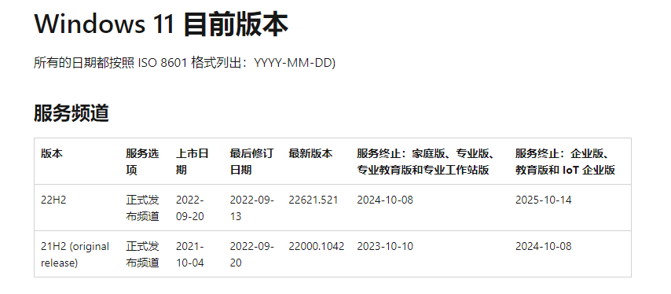

IT之家 9 月 21 日消息，微软现宣布“Windows 11 2022 更新”今天开始在 190 多个国家 / 地区推出，更新后版本号为 22621.521，所有用户均可在官网下载 (点此跳转官网)，使用以下方式皆可升级：Windows Update、升级助手、Media Creation Tool。
Windows 11 采用年度功能更新策略。Windows 11 功能更新将在每年下半年发布，并附带对家庭版、专业版、专业工作站版和专业教育版的 24 个月支持，以及对 企业版和教育版的 36 个月支持。
